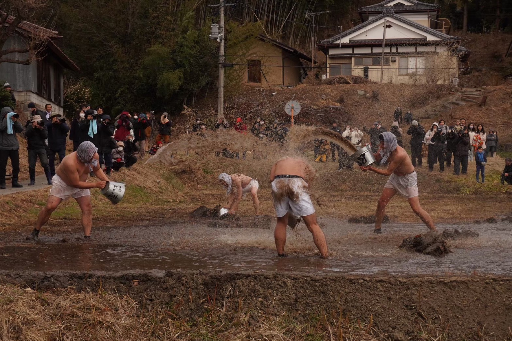
毎年元日の午前十二時頃、福島県三春町大字西方の塩釜神社周辺で、 地区の若者たちがまわし一枚となり激しく水をかけ合います。 最初は井戸水でかけ合い、やがて田んぼの泥水へと移行することから、 別名「泥かけ祭り」とも呼ばれてきました。
前年に結婚した男性の家を「宿」として、前夜は盃を交わした後、 大滝根川で禊を済ませ、塩釜神社へ参拝。 その後、行井戸を中心に勇壮な水の掛け合いが繰り広げられます。
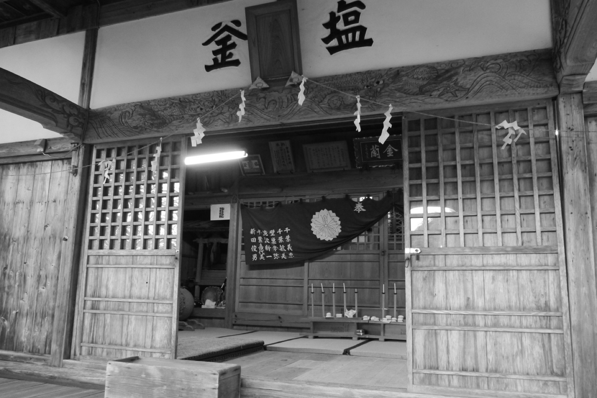
元日の夜明け前から始まる、魂の祭礼。
西方水かけ祭りの最新の様子はInstagramでご覧ください。
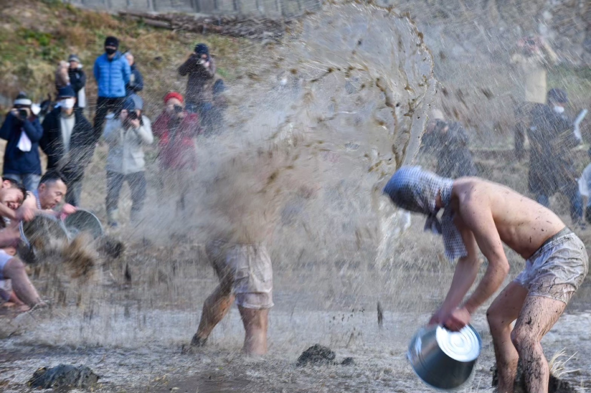
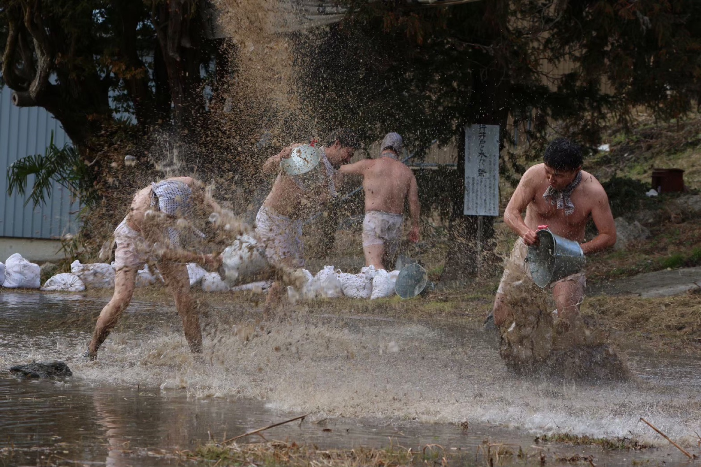
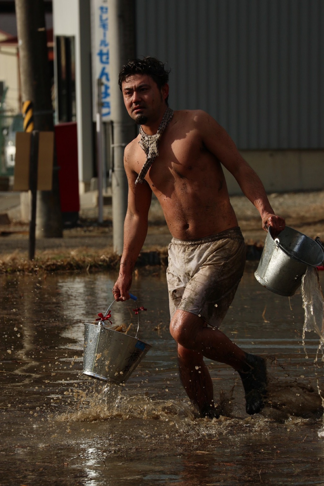
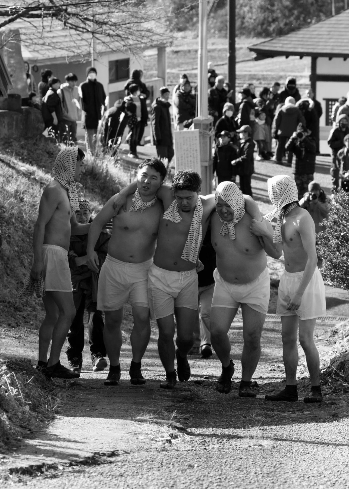
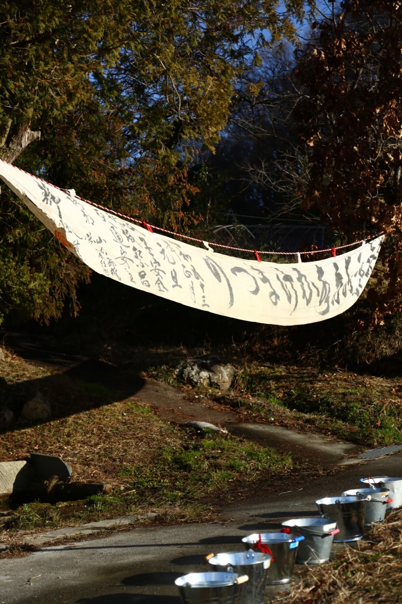
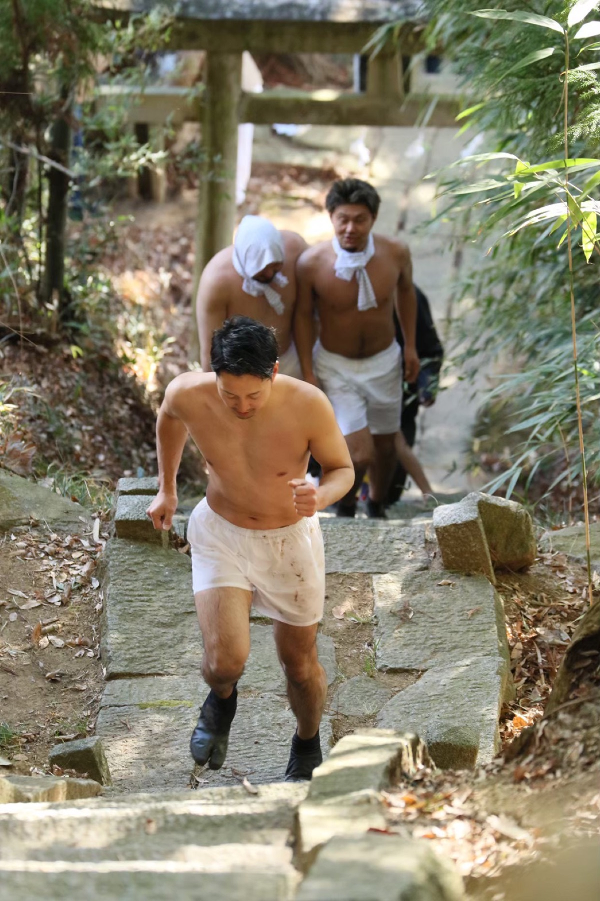
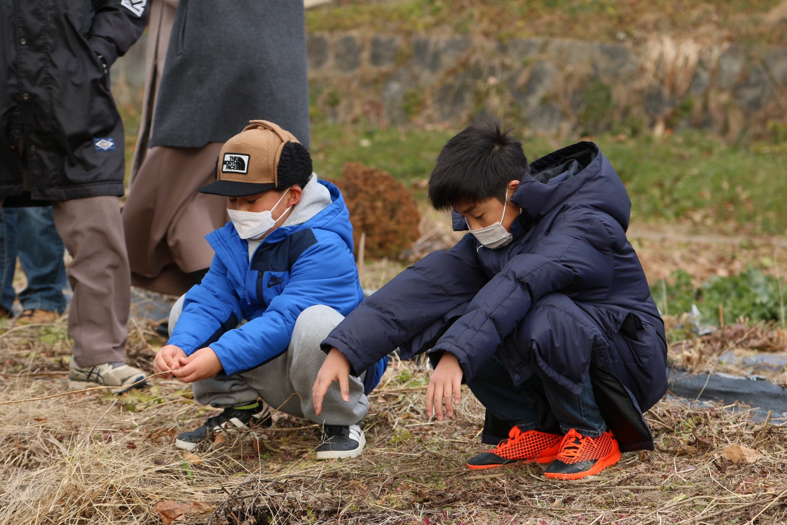
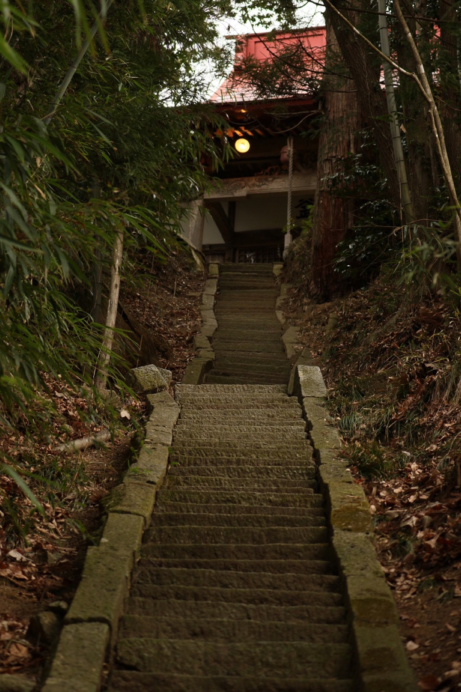
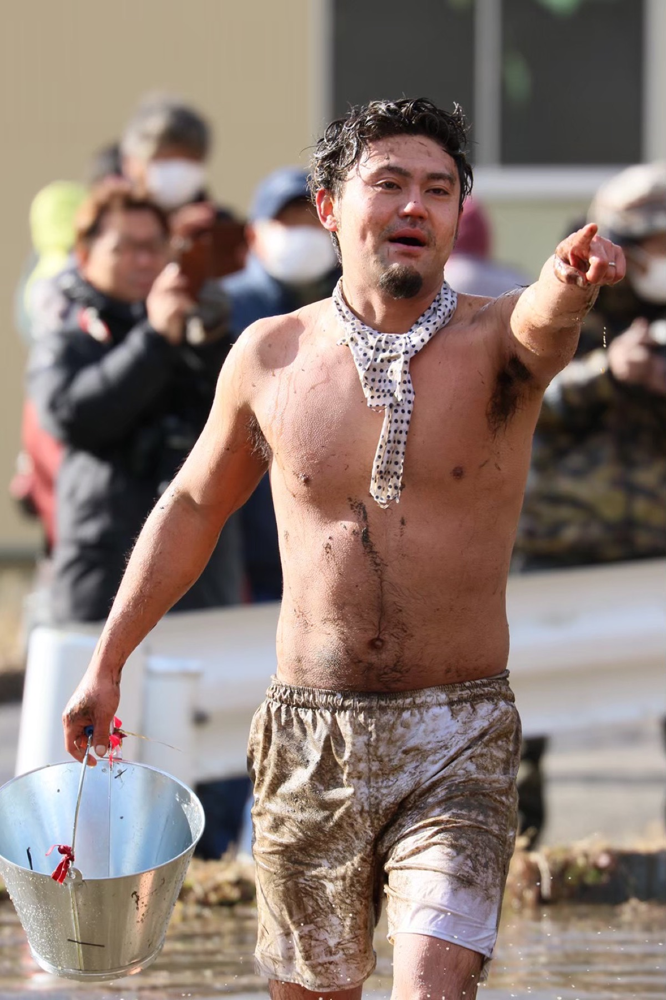
"Preserve the tradition. Pass on the spirit."
天正より四百年以上続くこの祭りは、地域の若者たちの手によって守られています。 皆様のご支援が、文化財の継承と次世代への伝承を支えます。
ご寄付は西方若連会の活動運営に使用されます。
金額に制限はありません。お気持ちで構いません。
ご不明な点はInstagram DMよりお気軽にお問い合わせください。
協賛・協力企業は随時募集しております。お気軽にご相談ください。
祭りへの参加・取材・寄付・協賛については、 Instagram DMよりお気軽にご連絡ください。
ご質問・取材依頼・協賛のご相談はInstagramのDMにてお受けしております。 最新情報や祭りの写真・映像もこちらから発信しています。